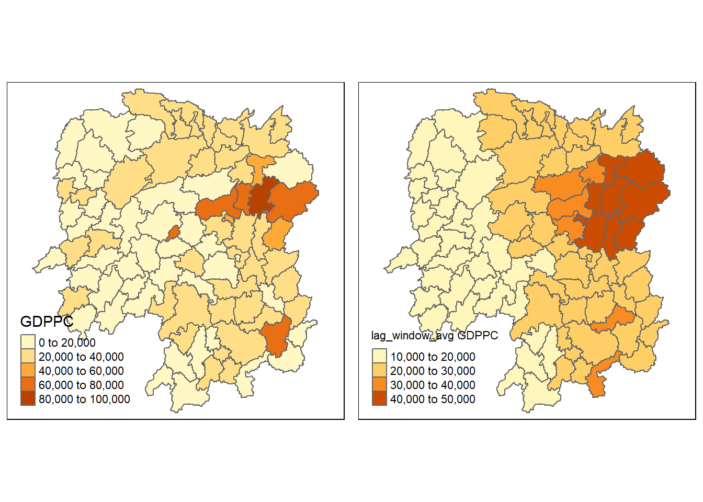

pacman::p_load(sf, spdep, tmap, tidyverse)In-Class Exercise 01
Spatial Weights and Applications
1. Setting Up
Loading Packages
We will use the following packages:
sf: import geospatial datasetstidyverse: manipulate aspatial dataspdep: compute spatial weights and autocorrelationtmap: plot maps
Import data
This dataset contains the administrative boundaries of the Hunan province in China.
hunan <- st_read(dsn = "data/geospatial",
layer = "Hunan")Reading layer `Hunan' from data source
`D:\lins-92\ISSS624\In-class_EX01\data\geospatial' using driver `ESRI Shapefile'
Simple feature collection with 88 features and 7 fields
Geometry type: POLYGON
Dimension: XY
Bounding box: xmin: 108.7831 ymin: 24.6342 xmax: 114.2544 ymax: 30.12812
Geodetic CRS: WGS 84Next, we import the aspatial data containing some economic indicators of the counties within Hunan.
hunan2012 <- read_csv("data/aspatial/Hunan_2012.csv")Rows: 88 Columns: 29
── Column specification ────────────────────────────────────────────────────────
Delimiter: ","
chr (2): County, City
dbl (27): avg_wage, deposite, FAI, Gov_Rev, Gov_Exp, GDP, GDPPC, GIO, Loan, ...
ℹ Use `spec()` to retrieve the full column specification for this data.
ℹ Specify the column types or set `show_col_types = FALSE` to quiet this message.Lastly, we join the aspatial data to the spatial data.
hunan <- left_join(hunan,hunan2012)%>%
select(1:4, 7, 15)Joining, by = "County"We can now visual GDP per capita for each county.
basemap <- tm_shape(hunan) +
tm_polygons() +
tm_text("NAME_3", size=0.5)
gdppc <- qtm(hunan, "GDPPC")
tmap_arrange(basemap, gdppc, asp=1, ncol=2)
2. Contiguity Spatial Weights
The poly2nb() function of the spdep package cna be used to compute contiguity weight matrices.
Queen Method
By setting queen=TRUE, the poly2nb() function will output the matrix using the queen method.
wm_q <- poly2nb(hunan, queen=TRUE)
summary(wm_q)Neighbour list object:
Number of regions: 88
Number of nonzero links: 448
Percentage nonzero weights: 5.785124
Average number of links: 5.090909
Link number distribution:
1 2 3 4 5 6 7 8 9 11
2 2 12 16 24 14 11 4 2 1
2 least connected regions:
30 65 with 1 link
1 most connected region:
85 with 11 linksWe can view the complete weight matrix using str(). It displays the indices of neighbours.
str(wm_q)List of 88
$ : int [1:5] 2 3 4 57 85
$ : int [1:5] 1 57 58 78 85
$ : int [1:4] 1 4 5 85
$ : int [1:4] 1 3 5 6
$ : int [1:4] 3 4 6 85
$ : int [1:5] 4 5 69 75 85
$ : int [1:4] 67 71 74 84
$ : int [1:7] 9 46 47 56 78 80 86
$ : int [1:6] 8 66 68 78 84 86
$ : int [1:8] 16 17 19 20 22 70 72 73
$ : int [1:3] 14 17 72
$ : int [1:5] 13 60 61 63 83
$ : int [1:4] 12 15 60 83
$ : int [1:3] 11 15 17
$ : int [1:4] 13 14 17 83
$ : int [1:5] 10 17 22 72 83
$ : int [1:7] 10 11 14 15 16 72 83
$ : int [1:5] 20 22 23 77 83
$ : int [1:6] 10 20 21 73 74 86
$ : int [1:7] 10 18 19 21 22 23 82
$ : int [1:5] 19 20 35 82 86
$ : int [1:5] 10 16 18 20 83
$ : int [1:7] 18 20 38 41 77 79 82
$ : int [1:5] 25 28 31 32 54
$ : int [1:5] 24 28 31 33 81
$ : int [1:4] 27 33 42 81
$ : int [1:3] 26 29 42
$ : int [1:5] 24 25 33 49 54
$ : int [1:3] 27 37 42
$ : int 33
$ : int [1:8] 24 25 32 36 39 40 56 81
$ : int [1:8] 24 31 50 54 55 56 75 85
$ : int [1:5] 25 26 28 30 81
$ : int [1:3] 36 45 80
$ : int [1:6] 21 41 47 80 82 86
$ : int [1:6] 31 34 40 45 56 80
$ : int [1:4] 29 42 43 44
$ : int [1:4] 23 44 77 79
$ : int [1:5] 31 40 42 43 81
$ : int [1:6] 31 36 39 43 45 79
$ : int [1:6] 23 35 45 79 80 82
$ : int [1:7] 26 27 29 37 39 43 81
$ : int [1:6] 37 39 40 42 44 79
$ : int [1:4] 37 38 43 79
$ : int [1:6] 34 36 40 41 79 80
$ : int [1:3] 8 47 86
$ : int [1:5] 8 35 46 80 86
$ : int [1:5] 50 51 52 53 55
$ : int [1:4] 28 51 52 54
$ : int [1:5] 32 48 52 54 55
$ : int [1:3] 48 49 52
$ : int [1:5] 48 49 50 51 54
$ : int [1:3] 48 55 75
$ : int [1:6] 24 28 32 49 50 52
$ : int [1:5] 32 48 50 53 75
$ : int [1:7] 8 31 32 36 78 80 85
$ : int [1:6] 1 2 58 64 76 85
$ : int [1:5] 2 57 68 76 78
$ : int [1:4] 60 61 87 88
$ : int [1:4] 12 13 59 61
$ : int [1:7] 12 59 60 62 63 77 87
$ : int [1:3] 61 77 87
$ : int [1:4] 12 61 77 83
$ : int [1:2] 57 76
$ : int 76
$ : int [1:5] 9 67 68 76 84
$ : int [1:4] 7 66 76 84
$ : int [1:5] 9 58 66 76 78
$ : int [1:3] 6 75 85
$ : int [1:3] 10 72 73
$ : int [1:3] 7 73 74
$ : int [1:5] 10 11 16 17 70
$ : int [1:5] 10 19 70 71 74
$ : int [1:6] 7 19 71 73 84 86
$ : int [1:6] 6 32 53 55 69 85
$ : int [1:7] 57 58 64 65 66 67 68
$ : int [1:7] 18 23 38 61 62 63 83
$ : int [1:7] 2 8 9 56 58 68 85
$ : int [1:7] 23 38 40 41 43 44 45
$ : int [1:8] 8 34 35 36 41 45 47 56
$ : int [1:6] 25 26 31 33 39 42
$ : int [1:5] 20 21 23 35 41
$ : int [1:9] 12 13 15 16 17 18 22 63 77
$ : int [1:6] 7 9 66 67 74 86
$ : int [1:11] 1 2 3 5 6 32 56 57 69 75 ...
$ : int [1:9] 8 9 19 21 35 46 47 74 84
$ : int [1:4] 59 61 62 88
$ : int [1:2] 59 87
- attr(*, "class")= chr "nb"
- attr(*, "region.id")= chr [1:88] "1" "2" "3" "4" ...
- attr(*, "call")= language poly2nb(pl = hunan, queen = TRUE)
- attr(*, "type")= chr "queen"
- attr(*, "sym")= logi TRUEIf we want to retrieve the GDP per capita of all neighbours of polygon 1, we can use the following code chunk. The first line store the indices of all neighbours of 1 by retrieving it from the nested list. The next line uses these indices to retrieve the values from the Hunan GDPPC variable by index.
nb1 <- wm_q[[1]]
hunan$GDPPC[nb1][1] 20981 34592 24473 21311 22879Rook Method
By changing queen=FALSE, the rook method will be used.
wm_r <- poly2nb(hunan, queen=FALSE)
summary(wm_r)Neighbour list object:
Number of regions: 88
Number of nonzero links: 440
Percentage nonzero weights: 5.681818
Average number of links: 5
Link number distribution:
1 2 3 4 5 6 7 8 9 10
2 2 12 20 21 14 11 3 2 1
2 least connected regions:
30 65 with 1 link
1 most connected region:
85 with 10 linksCompared to the queen method, the rook method produces fewer nonzero links because the rook method is more restrictive than queen method.
Row Standardised Weights Matrix
Row standardisation is applied to adjust the weights of each neighbour by the size of the neighbourhood. There are a few ways to perform row standardisation (see below). In the code chunk below, we use “W” where each neighbour is assigned the weight of 1/(#no of neighbours).
The function used is the nb2listw(). The options for style are :
“W” row standardised (each row sums to 1)
“B” binary
“C” globally standardised (weight = total no of areas/total links)
“U” unequal (all weights sum to 1)
“minmax” standardised by minimum and maximum of row
“S” variance standardised
rswm_q <- nb2listw(wm_q, style="W", zero.policy = TRUE)
rswm_qCharacteristics of weights list object:
Neighbour list object:
Number of regions: 88
Number of nonzero links: 448
Percentage nonzero weights: 5.785124
Average number of links: 5.090909
Weights style: W
Weights constants summary:
n nn S0 S1 S2
W 88 7744 88 37.86334 365.9147Visualising Contiguity Weights
Spatial weights can be visualised using connectivity graphs. Since the Hunan dataset is in polygons, we need to extract their centroids to do visualisation.
The following code chunk uses st_centroid() to generate the latitude and longitude of each polygon centroid and store in vectors. Lastly, the vectors are combined into a single object.
longitude <- map_dbl(hunan$geometry, ~st_centroid(.x)[[1]])
latitude <- map_dbl(hunan$geometry, ~st_centroid(.x)[[2]])
coords <- cbind(longitude, latitude)Now we can plot the connectivity graph. The first line plots the polygons and the second line plots the connectivity matrix by from the connections in weight matrix and the location of the points in coords.
plot(hunan$geometry, border="lightgrey")
plot(wm_q, coords, pch = 19, cex = 0.6, add = TRUE, col= "red")
title(main="Connectivity Graph (Queen)")plot(hunan$geometry, border="lightgrey")
plot(wm_r, coords, pch = 19, cex = 0.6, add = TRUE, col = "red")
title(main="Connectivity Graph (Rook)")par(mfrow=c(1,2))
plot(hunan$geometry, border="lightgrey")
plot(wm_q, coords, pch = 19, cex = 0.6, add = TRUE, col= "red")
title(main="Queen Contiguity")
plot(hunan$geometry, border="lightgrey")
plot(wm_r, coords, pch = 19, cex = 0.6, add = TRUE, col = "red")
title(main="Rook Contiguity")
3. Distance Spatial Weights
For distance weight matrices, the dnearneigh() function of the spdep package is used.
The function identifies neighbours of points by Euclidean distance within a specified distance band.
Fixed Distance Weight Matrix
A fixed distance weight matrix considers any points within a certain fixed distance as a neighbour. To find this, we first need to set the upper limit for the distance band. We do this using the knearneigh() function by setting k=1 to generate a knn object. It is passed to the knn2nb() function to create a list of indices of the nearest neighbour to each centroid. We then use the nbdists() to compute the distance between each centroid and nearest neighbour.
k1 <- knn2nb(knearneigh(coords))
k1dists <- unlist(nbdists(k1, coords, longlat = TRUE))
summary(k1dists) Min. 1st Qu. Median Mean 3rd Qu. Max.
24.79 32.57 38.01 39.07 44.52 61.79 From the summary, we see that the maximum distance between a centroid and its nearest neighbour centroid is 61.79km. If we set the maximum distance at 62km, all centroids will have at least one neighbour. The code chunk below creates a spatial matrix using 62km as the maximum distance.
wm_d62 <- dnearneigh(coords, 0, 62, longlat = TRUE)
wm_d62Neighbour list object:
Number of regions: 88
Number of nonzero links: 324
Percentage nonzero weights: 4.183884
Average number of links: 3.681818 At maximum distance of 62km, the average number of neighbours is 3.68.
Now we can plot the connectivty graph:
par(mfrow=c(1,2))
plot(hunan$geometry, border="lightgrey")
plot(k1, coords, add=TRUE, col="red", length=0.08)
title(main="1st nearest neighbours")
plot(hunan$geometry, border="lightgrey")
plot(wm_d62, coords, add=TRUE, pch = 19, cex = 0.6)
title(main="Distance link (62km)")Adaptive Distance Weight Matrix
The adaptive distance weight matrix is another way to build a distance weight matrix. Instead of using a fixed distance to find neighbours, it uses a fixed number of neighbours.
We use the knearneigh() function again but set the value of k at a larger number.
knn6 <- knn2nb(knearneigh(coords, k=6))
knn6Neighbour list object:
Number of regions: 88
Number of nonzero links: 528
Percentage nonzero weights: 6.818182
Average number of links: 6
Non-symmetric neighbours listWe do not need the additional step of find the distance between neighbours since we have already fixed the number of neighbours. Nonetheless, we can use the following code to understand how the distance considered has changed between methods. Because some areas are more sparse or polygons are larger, the distance considered has naturally increased. The maximum distance considered is now 125km compared to 62km in the fixed distance method.
k6dists <- unlist(nbdists(knn6, coords, longlat = TRUE))
summary(k6dists) Min. 1st Qu. Median Mean 3rd Qu. Max.
24.79 45.30 57.56 57.89 67.73 124.88 We can plot the adaptive distance weight matrix connectivity graph:
plot(hunan$geometry, border="lightgrey")
plot(knn6, coords, pch = 19, cex = 0.6, add = TRUE, col = "red")
title(main="Adaptive distnace (k=6)")Inverse Distance Weight Matrix
The inverse distance matrix uses actual distance not just binary weights. It is inversed because weightage should decrease with distance.
We can compute distance between points using the nbdists() function. Note that we use the queen contiguity matrix here. Although distance is considered, the neighbourhood is still based on queen contiguity.
dist <- nbdists(wm_q, coords, longlat = TRUE)
ids <- lapply(dist, function(x) 1/(x))
head(ids, 5)[[1]]
[1] 0.01535405 0.03916350 0.01820896 0.02807922 0.01145113
[[2]]
[1] 0.01535405 0.01764308 0.01925924 0.02323898 0.01719350
[[3]]
[1] 0.03916350 0.02822040 0.03695795 0.01395765
[[4]]
[1] 0.01820896 0.02822040 0.03414741 0.01539065
[[5]]
[1] 0.03695795 0.03414741 0.01524598 0.01618354Row-Standardised Inverse Distance Weight Matrix
We can also apply row standardisation to the inverse distance weight matrix.
rswm_ids <- nb2listw(wm_q, glist=ids, style="B", zero.policy=TRUE)
rswm_idsCharacteristics of weights list object:
Neighbour list object:
Number of regions: 88
Number of nonzero links: 448
Percentage nonzero weights: 5.785124
Average number of links: 5.090909
Weights style: B
Weights constants summary:
n nn S0 S1 S2
B 88 7744 8.786867 0.3776535 3.8137The code below displays the weights that will be applied to the neighbours of polygon 1.
rswm_ids$weights[1][[1]]
[1] 0.01535405 0.03916350 0.01820896 0.02807922 0.011451134. Applying Spatial Weight Matrices
Spatially Lagged Mean
Spatial weight matrices are typically used in computing spatially lagged values. Spatially lagged values can be used in spatial lag regression as an independent variable to account for the effect of a location’s neighbours.
In the following code chunk, we use the row-standardised queen contiguity matrix to compute the average GDP per capita for each polygon’s neighbours.
GDPPC.lag <- lag.listw(rswm_q, hunan$GDPPC)
head(GDPPC.lag,5)[1] 24847.20 22724.80 24143.25 27737.50 27270.25We join the spatially lagged mean GDP per capita values to the Hunan dataset below:
lag.list <- list(hunan$NAME_3, lag.listw(rswm_q, hunan$GDPPC))
lag.res <- as.data.frame(lag.list)
colnames(lag.res) <- c("NAME_3", "lag GDPPC")
hunan <- left_join(hunan,lag.res)Joining, by = "NAME_3"Now we can plot the lagged GDP per capita.
gdppc <- qtm(hunan, "GDPPC")
lag_gdppc <- qtm(hunan, "lag GDPPC")
tmap_arrange(gdppc, lag_gdppc, asp=1, ncol=2)
Spatially Lagged Sum
The spatially lagged sum is just the sum of the neighbours values. This means that each neighbour has a weight of 1.
b_weights <- lapply(wm_q, function(x) 0*x + 1)
b_weights2 <- nb2listw(wm_q,
glist = b_weights,
style = "B")
b_weights2Characteristics of weights list object:
Neighbour list object:
Number of regions: 88
Number of nonzero links: 448
Percentage nonzero weights: 5.785124
Average number of links: 5.090909
Weights style: B
Weights constants summary:
n nn S0 S1 S2
B 88 7744 448 896 10224We can then add compute the spatially lagged sum and join it to the Hunan dataset for plotting.
lag_sum <- list(hunan$NAME_3, lag.listw(b_weights2, hunan$GDPPC))
lag.res <- as.data.frame(lag_sum)
colnames(lag.res) <- c("NAME_3", "lag_sum GDPPC")
hunan <- left_join(hunan, lag.res)Joining, by = "NAME_3"gdppc <- qtm(hunan, "GDPPC")
lag_sum_gdppc <- qtm(hunan, "lag_sum GDPPC")
tmap_arrange(gdppc, lag_sum_gdppc, asp=1, ncol=2)
Spatial Window Average and Sum
The spatial window average and sum basically include the area itself, not only its neighbours. To do that, we need to change the diagonal values of the matrix to 1 using the include_self() function.
wm_q1 <- nb2listw(include.self(wm_q))
wm_q1Characteristics of weights list object:
Neighbour list object:
Number of regions: 88
Number of nonzero links: 536
Percentage nonzero weights: 6.921488
Average number of links: 6.090909
Weights style: W
Weights constants summary:
n nn S0 S1 S2
W 88 7744 88 30.90265 357.5308lag_w_avg_gpdpc <- lag.listw(wm_q1,
hunan$GDPPC)
head(lag_w_avg_gpdpc)[1] 24650.50 22434.17 26233.00 27084.60 26927.00 22230.17Join the spatial window mean to the Hunan dataset and plot it.
lag.list.wm_q1 <- list(hunan$NAME_3, lag.listw(wm_q1, hunan$GDPPC))
lag_wm_q1.res <- as.data.frame(lag.list.wm_q1)
colnames(lag_wm_q1.res) <- c("NAME_3", "lag_window_avg GDPPC")
hunan <- left_join(hunan, lag_wm_q1.res)Joining, by = "NAME_3"gdppc <- qtm(hunan, "GDPPC")
w_avg_gdppc <- qtm(hunan, "lag_window_avg GDPPC")
tmap_arrange(gdppc, w_avg_gdppc, asp=1, ncol=2)
We can repeat the process to get spatial window sum.
b_weights <- lapply(include.self(wm_q),
function(x) 0*x + 1)
b_weights[1][[1]]
[1] 1 1 1 1 1 1b_weights2 <- nb2listw(include.self(wm_q),
glist = b_weights,
style = "B")
b_weights2Characteristics of weights list object:
Neighbour list object:
Number of regions: 88
Number of nonzero links: 536
Percentage nonzero weights: 6.921488
Average number of links: 6.090909
Weights style: B
Weights constants summary:
n nn S0 S1 S2
B 88 7744 536 1072 14160w_sum_gdppc <- list(hunan$NAME_3, lag.listw(b_weights2, hunan$GDPPC))
w_sum_gdppc.res <- as.data.frame(w_sum_gdppc)
colnames(w_sum_gdppc.res) <- c("NAME_3", "w_sum GDPPC")
hunan <- left_join(hunan, w_sum_gdppc.res)Joining, by = "NAME_3"gdppc <- qtm(hunan, "GDPPC")
w_sum_gdppc <- qtm(hunan, "w_sum GDPPC")
tmap_arrange(gdppc, w_sum_gdppc, asp=1, ncol=2)